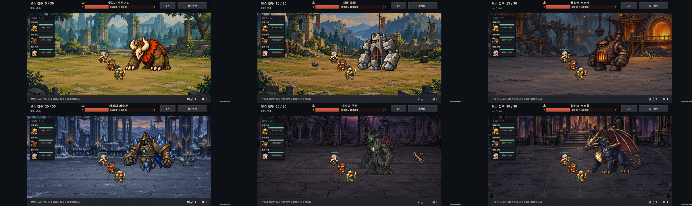
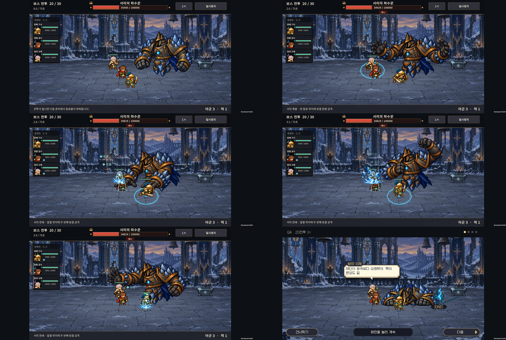
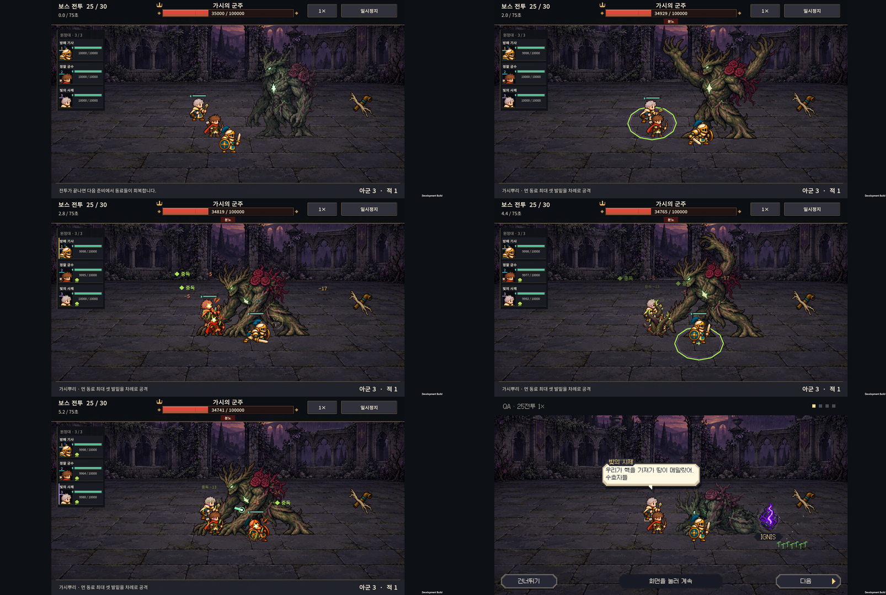

v0.65 보스 동작 구분과 정원의 진정 자세
2026-11-01 · IGNIS: ASHEN OATH
정원 수호자가 전투 후 다시 서 있던 문제를 수정하고, 후반 보스의 고유 기술을 일반 공격과 다른 전신 자세로 표현한다. 새로운 피해 패턴을 추가하는 작업은 아니다. 피해량·공격 간격·공격 범위·예고 시간·난이도 규칙은 유지한다.
보스별 변경
| 전투 | 보스 | 공격 동작과 전투 후 자세 |
|---|---|---|
| 5 | 숲 수호자 | 앞발 공격과 몸을 낮추는 돌진을 유지한다. 전투 후 낮은 자세와 새끼의 접근 장면을 확인한다. |
| 10 | 성채 골렘 | 양팔 내려찍기와 후속 충격파에 타격·회복 시간을 확보한다. 다음 예고가 직전 타격을 덮지 않는다. 기본 공격과 기술에 공유 그림은 남아 있다. |
| 15 | 용광로 | 일반 양팔 타격, 화구를 여는 폭발, 지면에 주먹을 박는 후속 불씨파를 구분한다. 기존 그림을 상황에 맞게 배정한다. |
| 20 | 서리 파수꾼 | 기본 주먹 공격과 별도로 양손 빙결 시전·후속 전방 시전 전신 4자세를 추가한다. v0.64의 체형·얼음 색·접지하는 패배 자세는 유지한다. |
| 25 | 가시의 군주 · 정원 수호자 | 팔 휘두르기와 별도로 양팔을 올리는 뿌리 시전·마지막 가시 시전 전신 4자세를 추가한다. 쓰러질 때 몸을 낮춘 뒤 뿌리를 짚은 무릎 자세를 유지하며, 대화 도중 대기 자세로 돌아가지 않는다. |
| 30 | 왕관 수호룡 | 일반 불덩이·지상 균열·비행 브레스·착지 구분을 유지하고 회귀 검증한다. 비행 크기, 브레스 끝점과 지상 예고의 대응은 변경하지 않는다. |
연속 공격과 아트 기준
- 서리의 첫 폭발과 두 번째 예고가 같은 전투 틱에 발생해도 첫 발동 자세를 먼저 보여준다. 발동 순번은 타격 이벤트 시점에 보관한다.
- 서리 0.36초, 정원 0.32초, 용광로 0.36초, 골렘 0.28초의 표시 구간 안에 발동·회복을 배치한다. 전투 계산이나 실제 공격 간격을 늘리지 않는다.
- 새 그림은 팔을 분리하지 않은 전신 그림이다. 한 보스 안에서 공통 배율을 쓰며, 손을 올렸다고 몸을 작게 줄이지 않는다.
- 정원은 기존 패배 그림의 몸을 낮추는 두 자세를 활용한다. 사체가 흩어지는 마지막 그림 대신 진정한 수호자로 남는다. 모션 줄이기에서는 바로 안정된 자세를 보여준다.
- 분노의 전신 붉은 덧색을 약하게 해서 지역별 원래 색을 보존한다. 분노 안내와 공격 규칙은 유지한다.
- 도트 밀도·채도·접지·장비와 신체 연속성은 공통 아트 기준을 따른다. 검사에서 문제 없는 기존 보스를 일괄 재생성하지 않는다.
새 자산과 제작 기록
- 서리 시전 4자세
- 정원 시전 4자세
- 최종 생성 프롬프트 — 내장
image_gen사용. 생성 PNG와 알파를 그대로 보관하고 Point/1024 임포트·프레임 UV·기존 알파 컷오프로 표시한다.


검증
- Unity Android 빌드 성공. 보스 6종 시뮬레이션의 타격 27회에서 연속 발동 우선순위와 새 시전 8자세를 확인했다.
- 대화 609개 항목·28개 승패/스킵 시나리오, 엔딩 214개 항목, 기존 서리 패배·보스 피격 억제 검증 통과.
- Galaxy Buddy2에서 6종 × 1×·2× × 기본/모션·섬광 줄이기 = 24개 사례 통과. 각 사례에서 일반 공격, 고유 공격, 승리 처리 1회, 대화 종료 1회를 확인했다. 서리의 두 시전과 정원의 마지막 시전, 용의 지상·공중·착지 기술을 실제 재생했다.
- 정원은 대화 중 19번 무릎 자세, 서리는 21번 접지 자세를 유지했다. 두 보스 모두 시전 중 몸이 분리되거나 장비가 생기는 현상은 전장 캡처에서 발견하지 않았다.
- 체력을 크게 늘린 동작 확인용 전투다. 실제 원정 승률·난이도를 다시 측정한 결과로 해석하지 않는다. 동작의 풍부함은 새 중간 그림을 더해 계속 개선할 여지가 있다.
- 테스트 전의 저장 데이터와 설정은 바이트 단위로 복원·대조했다. 휴대폰의 이번 검수용 원본 캡처만 정리했고, PC에는 47장과 영상을 보관했다. HTML은 소스·로컬 링크를 확인했으며 브라우저 렌더링 검증은 하지 않았다.
- 실기기 24사례, 검증 로그, APK·자산 정보, 135초 검수 영상.
같은 아군과 비교
위부터 왼쪽→오른쪽: 숲·성채·용광로 / 서리·정원·왕궁. 지역별 실루엣과 색을 유지하며, 기준 아군은 같은 방패 기사·궁수·사제다.

후반 시전과 진정 자세
각 그림은 왼쪽→오른쪽, 위→아래 순서로 대기·첫 시전 준비·첫 발동·후속 준비·후속 발동·대화 장면이다.


다음 우선순위
보스 기술 동작이 분리된 상태로 처음 하는 사람의 원정 플레이를 관찰한다. 특히 예고를 보고 배치·편성을 바꿀 이유를 이해하는지, 20·25·30전투의 연속 공격을 구분하는지 본다. 성채 골렘의 기본 공격 전용 한팔 그림과 각 기술의 중간 연결 프레임은 이후 보강 후보이며, 이번에 모든 보스의 애니메이션을 최종 완성한 것은 아니다.